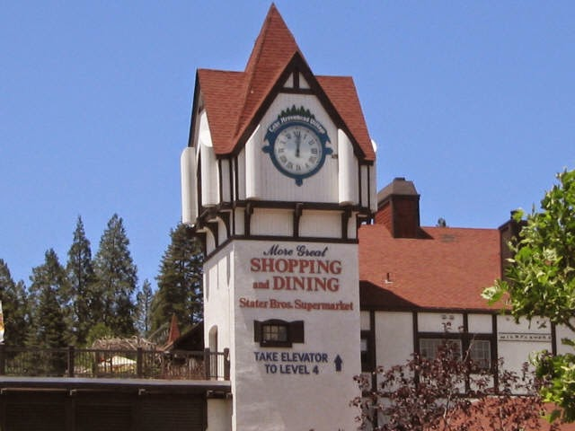
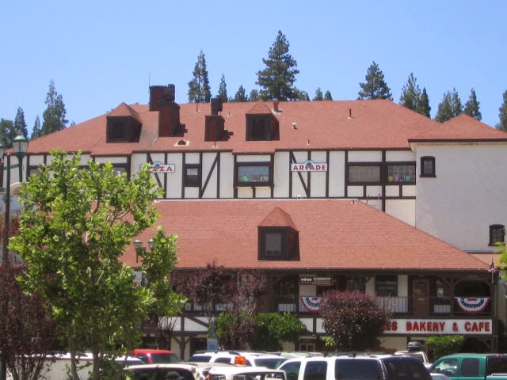
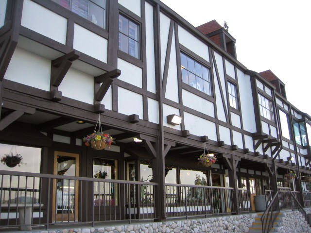
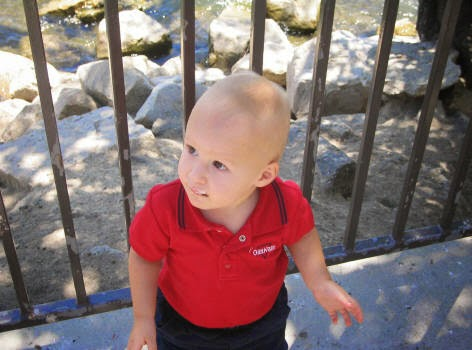
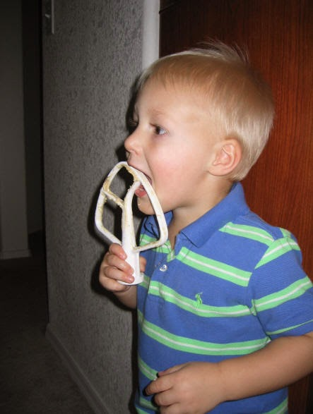
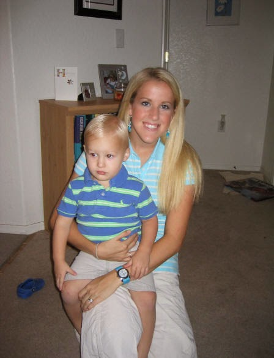

Recovered weblog entry
The Cabin
The weekend draws to a close, and I'm not ready for another work week. Sure, it'll still happen come 9:00am tomorrow, but I won't like it. I won't even pretend! We had a lot of fun this weekend, the family and I, and the fun isn't just over yet. I can hear baby Sumner in the bathtub, laughing away like a wet pirate. Actually, he did take his stuffed pirate toy into the bathtub tonight. Another McDonald's treasure.
Sumner continually reminds me of how precious the little things in life are. The smallest surprise will make his day complete, from gumballs to ice cream cones (come to think of it, most of his favorite things are food-based. I wonder where that comes from).
So now, willingly, unwillingly, the work week beckons to me and I must follow its call. I do have much to look forward to shortly, however; we're taking a family trip to California on Thursday night to spend some time at the in-laws cabin at Lake Arrowhead. I'm terribly happy with that idea. Fantastically infatuated, maybe.
When the in-laws decided to make the big purchase of the cabin, I was outspokenly pessimistic about the whole thing. It just seemed to far away, too expensive, and too complicated for the family. But now, after a few trips there, I can only think of one other place that I find more beautiful (read: Snowbird) and I always look forward to going back. It's up in the mountains of Southern California, (which by the way, I did not know existed before) and the trees are endless.
The architecture is inspired from Europe; some Swiss and German elements are spattered throughout the town. But the Village is where the buildings truly shine. Here, take a look.



Not the greatest pictures, I know, but to make up for it, how about a cute picture of Sumner? (taken quite a while ago)

That was taken lakeside in Lake Arrowhead just over one year ago, and yes, that is ice cream dribbling down his mouth. I told you most of his joys stemmed from ice cream.
So, I'll tell you what. (This is dangerous. I'm making a promise) I'll take better pictures this time around. I'll even post them when I get home. Heck, I might even take some new pictures of the family while we're all up there. It's about time, anyway. I do have some recent pictures of the boy. These were taken about a week ago after I made some cookies and Sumner decided it was his turn, not mom's, to have the beaters. Cookie Dough!

And now, for the reason that I live and love. The two people that make my life amazing every day.

In the words of Stevie Wonder, Isn't She Lovely?
That's all for now, enjoy your week! Seriously. I'll do my best to survive until Thursday. And if you made your way here via MySpace, a million trillion thanks for reading this.